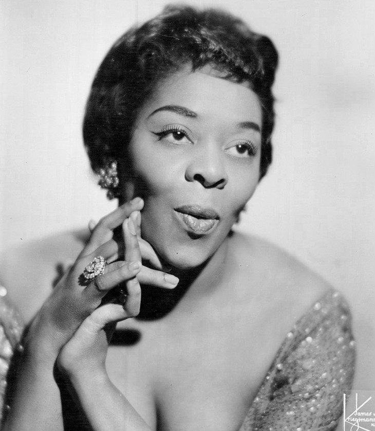

故事
他出生兩個星期，當礦工的父親就過世了。他是鋼琴手 Sonny Clark，1931 年生在賓州一個煤礦小鎮。家裡有八個孩子，他是最小的。
二十歲那年，他去加州找親戚，決定留下來彈琴。1957 年，他替歌手 Dinah Washington 伴奏，跟著搬到紐約。1958 年一月，他錄下專輯 Cool Struttin'。
封面是一雙穿高跟鞋的腿，走在紐約街頭。據說這張唱片在日本特別受歡迎，比在美國還紅。他三十一歲就過世，留下的錄音不多。下次聽 Cool Struttin'，注意鋼琴怎麼在兩支管樂之間接話。
故事後面
Sonny Clark 生在賓州的煤礦小鎮，出生兩週父親就過世。二十歲留在加州彈琴，後來搬到紐約。
一九五八年的 Cool Struttin' 是硬咆勃的經典，封面一雙高跟鞋走在紐約街頭，非常有名。
這張唱片在日本特別受歡迎。他三十一歲就過世，留下的錄音不多。

這樣聽
聽鋼琴在兩支管樂之間，怎麼接話、怎麼留白。
逐句英文
Two weeks after he was born, his coal-miner father died.
He was pianist Sonny Clark, born in 1931 in a Pennsylvania coal town.
He was the youngest of eight children.
At twenty he visited family in California and decided to stay and play.
In 1957 he accompanied singer Dinah Washington and moved to New York.
In January 1958 he recorded the album Cool Struttin'.
The cover shows a pair of legs in heels walking a New York street.
Reportedly the album was especially loved in Japan, more than in the US.
He died at thirty-one, leaving only a small body of recordings.
Next time you hear Cool Struttin', notice how the piano answers between the two horns.
查證筆記與出處
「去找親戚」條目寫 aunt。日本特別受歡迎為常見說法，寫據說。死因不寫。
https://en.wikipedia.org/wiki/Sonny_Clark
https://en.wikipedia.org/wiki/Cool_Struttin%27
一分鐘影片版在 Instagram @jazz101tw。